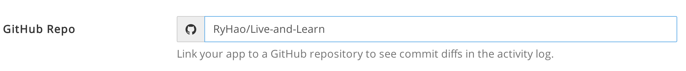

GitBook
GitBook 是用 node.js 的 npm 管理工具搭建的一種建立電子書的套件
支援多種檔案格式：
- 靜態網頁：這個是 Gitbook 預設的輸入格式
- PDF : 需要安裝 gitbook-pdf 套件
- eBook: 需要安裝 ebook-convert
- 單一 HTML 網頁，支援將內容輸出成一個單頁的 html
- JSON: 用在資料取得
在本機建立第一本電子書
執行以下指令安裝 gitbook 套件，安裝之前記得要先安裝 npm
$ sudo npm install -g gitbook-cli
安裝好之後在你要放電子書的目錄下建立這兩個檔案
- README.md - 撰寫的內容為電子書的簡介
- SUMMARY.md - 用來定義這本電子書的章節結構
Gitbook 最大的好處就是結構簡單，只有這兩個主要的檔案
設定好這兩個檔案內容後，接著執行下面的指令讓它自動去產生對應的檔案
$ gitbook init
執行後就會看到目錄被自動建立起來
架構完成之後，就可以快樂的撰寫屬於你的電子書啦！
最後，別忘了如果想要預覽電子書的樣貌，可以執行
$ gitbook serve
這樣就會自動利用 node 啟動一個小型 HTTP Server Port 預設是 4000
啟動之後就擺著不要關掉
如此一來還可以享受 LiveReload 的即時更新效果喔！
將電子書 Push 到 Gitbook 網站
首先到 Gitbook 網站 建立一個新的電子書
接著會出現教你如何建立 Gitbook 的畫面
不過我們已經建立好了，可以直接跳過前往 Settings 畫面
順便一提，官網有推出他們一套 Gitbook Editor 也蠻方便的，有興趣可以下載試試看
你會看到熟悉的 Git URL 這個 URL 就是讓你用 Git 把本機寫好的電子書 Push 到 Gitbook 網站上
成功 Push 後，接著要連結 Github 的 Repository
連結 Github Repository
首先到 Gitbook 電子書的 Settings 畫面，設定要連結的 Repository (設定之前不要忘了先去 Github 建立該 Repository)

如果你名字沒設定錯誤 在回到同一個地方會發現多一個按鈕 Add a deployment webhook 不要猶豫的按下去
這個主要是為了讓你的 Github 上的 Repository 可以跟 Gitbook 溝通！
都設定好了之後，你就可以嘗試把你本機的電子書內容 Push 到你的 Github 上
接著你就會在 Gitbook Builds 畫面上看到 Github 幫你自動部署到 Gitbook 上進行 Build 的動作
等待全部都建置完成
就可以在網站上直接閱讀了！